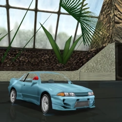

✖
☰
☰
Cars VI
☆ designates co-authors, ＋ designates add-ons
horizontal swipe or arrows <- -> for quick page nav
Cars VI
Shelby Cobra Daytona Coupe
Porsche 968 CS
＋
Porsche 924 Carrera GT
☆DSL_Tile
＋

VeilSide GT-R32 CI
Nissan Skyline GT-R R33
Ferrari 288 GTO
☆MOH
Zexel Skyline '97
☆MOH
Ferrari 456 Venice Estate
DMC DeLorean
Honda Prelude Type SH
Nissan Skyline GTR-R (Custom)
Volkswagen W12 Coupé